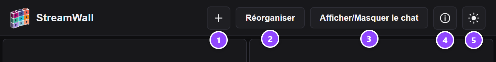
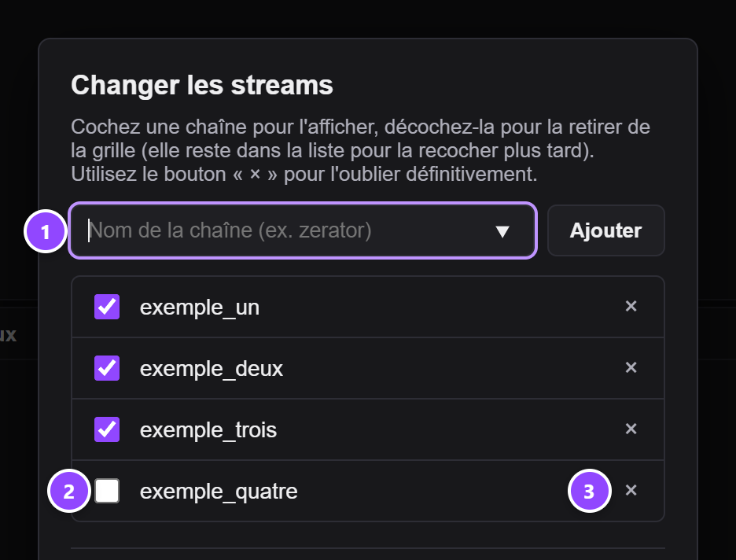
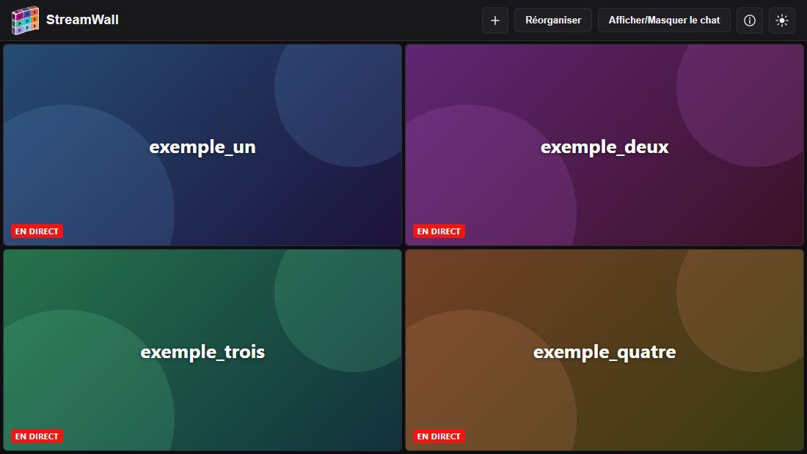
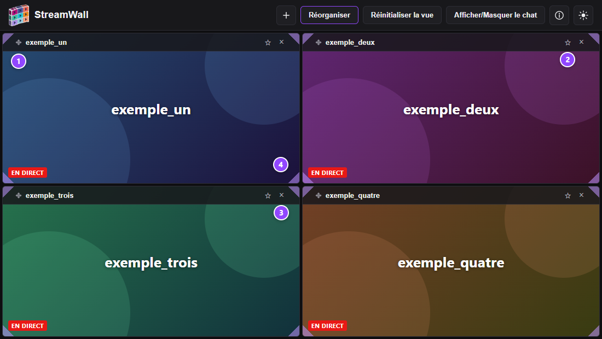
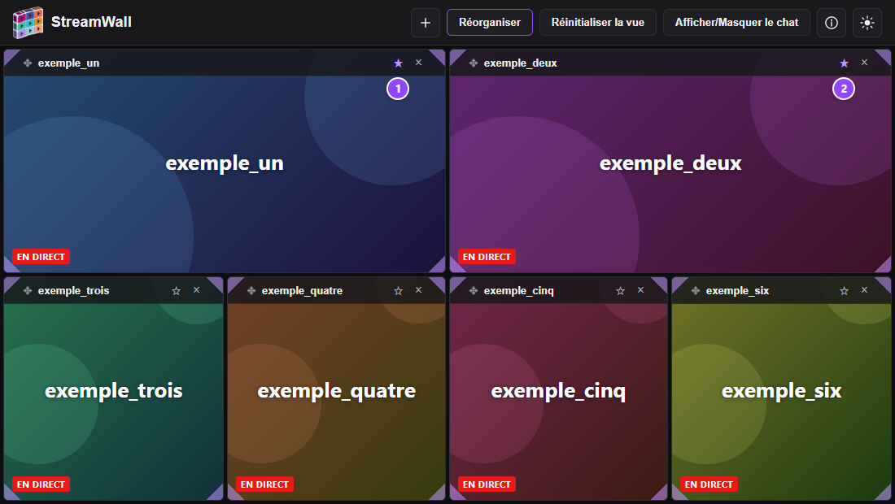
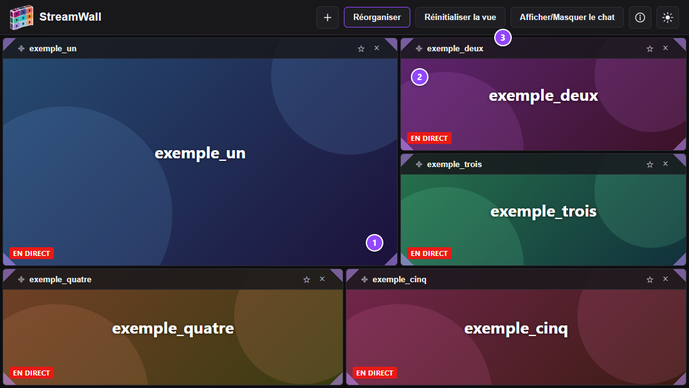
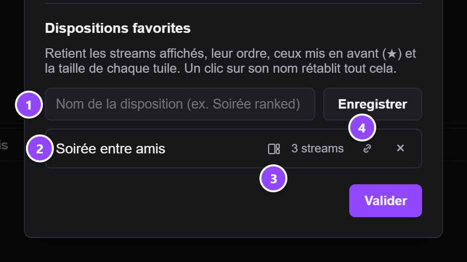
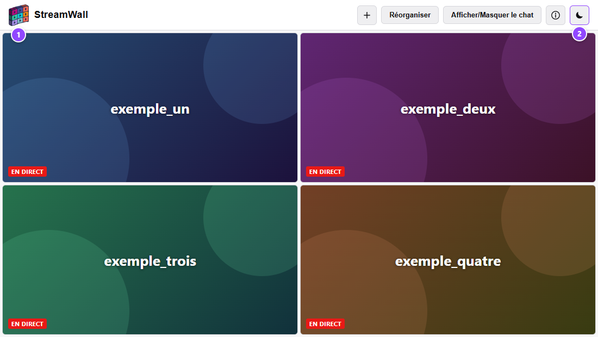

Ajoutez des chaînes Twitch pour commencer à les regarder en simultané.
Changer les streams
Cochez une chaîne pour l'afficher, décochez-la pour la retirer de la
grille (elle reste dans la liste pour la recocher plus tard). Utilisez
le bouton « × » pour l'oublier définitivement.
Dispositions favorites
Retient les streams affichés, leur ordre, ceux mis en avant (★) et la
taille de chaque tuile. Un clic sur son nom rétablit tout cela.
Aide — les options de StreamWall
Pour commencer
StreamWall affiche plusieurs streams Twitch en même temps
sur une seule page. Les tuiles se partagent toujours 100 % de
l'écran : jamais de case vide, quel que soit le nombre de streams.
Tout se passe dans votre navigateur : pas de compte, pas de serveur.
Vos réglages sont mémorisés sur cet appareil (voir
).
En deux gestes :
cliquez sur le bouton + du menu du haut (ou, si la page est vide, sur
« Ajouter des streams ») ;
tapez le nom d'une chaîne Twitch, puis appuyez sur Entrée : le stream s'affiche. « Valider »
referme la fenêtre.
Le bouton Réorganiser, à côté, sert ensuite à changer les streams de place, les
mettre en avant, les retirer ou les agrandir.
Le menu du haut

Ajouter (+) : ouvre la fenêtre « Changer les streams » pour ajouter un stream ou
gérer ceux que vous avez déjà (voir
).
Il est toujours affiché, mode Réorganiser ou non.
Réorganiser : active le mode qui permet de changer de place, mettre en avant, retirer ou agrandir des streams (voir
).
Tant qu'il est actif, un bouton Réinitialiser la vue apparaît à côté.
Afficher/Masquer le chat : ouvre ou ferme le panneau de discussion
(voir ).
Aide (le bouton « i ») : ouvre cette fenêtre.
Soleil / lune : passe du thème sombre au thème clair, et inversement
(voir ).
Sur un petit écran, le menu défile horizontalement si tous les boutons ne tiennent pas.
Ajouter des streams
La fenêtre « Changer les streams » s'ouvre avec le bouton
+ du menu du haut, toujours affiché (il n'est pas nécessaire
d'activer le mode Réorganiser) ou, quand aucun stream n'est affiché, avec le bouton
« Ajouter des streams » au milieu de la page.

Champ de saisie : tapez le nom d'une chaîne (par exemple zerator) ou
collez son adresse twitch.tv/…, puis appuyez sur Entrée ou sur « Ajouter ».
Un nom Twitch compte de 4 à 25 caractères : lettres, chiffres et « _ ». Le champ propose
en auto-complétion les chaînes déjà utilisées sur cet appareil.
Case à cocher : coche = la chaîne est affichée ; décochée, elle disparaît
du mur mais reste dans la liste pour la remettre plus tard.
Croix « × » : oublie définitivement la chaîne (elle sort de la liste).
« Valider », la touche Échap ou un clic à côté de la fenêtre la referme.
Le mur et le son

Chaque tuile est le lecteur officiel de Twitch : pause, volume, qualité,
plein écran… tout est dans ses propres commandes.
Les tuiles se répartissent automatiquement selon leur nombre et la taille
de la fenêtre, sans laisser de vide.
Un seul stream a le son au chargement : le premier stream mis en avant s'il y en a,
sinon le premier affiché. Les autres démarrent muets ; utilisez le volume de leur lecteur pour en écouter un autre.
Mode Réorganiser
Le bouton Réorganiser fait apparaître, sur chaque tuile, une barre d'outils
et des poignées dans les coins. Cliquez à nouveau dessus pour revenir au mur seul. Les tuiles
gardent exactement la même place et la même taille dans les deux modes.

Poignée ✥ / toute la tuile : glissez-la sur une autre tuile pour changer de place.
Le stream prend l'emplacement de celui où vous le déposez, et les autres se décalent d'un cran.
Étoile ☆ : met le stream en avant
(voir ).
Croix « × » : retire le stream du mur. Il reste dans la liste de la fenêtre
« Changer les streams » pour le remettre plus tard.
Poignée de coin : agrandit ou réduit la tuile
(voir ).
Mettre en avant
Cliquez sur l'étoile d'un stream (mode Réorganiser) pour en faire un favori :
l'étoile devient pleine (★). Deux streams au maximum peuvent être mis en avant.

Le premier favori, à gauche.
Le second favori, à sa droite.
Deux favoris : chacun occupe un quart de la surface, côte à côte en haut ;
les autres tuiles se répartissent en dessous.
Un favori : il occupe le quart supérieur gauche ; s'il n'y a qu'un autre stream, il prend
60 % de la largeur sur toute la hauteur.
Le premier favori garde le son au chargement. La mise en avant n'a d'effet que s'il reste au moins un autre stream affiché.
Une
retient quels streams sont mis en avant, et les rétablit quand vous l'appliquez.
Les favoris peuvent eux aussi être agrandis à la main
().
Recliquez sur une étoile pleine pour retirer la mise en avant.
Redimensionner une tuile
En mode Réorganiser, chaque tuile a une poignée dans chacun de ses quatre coins.
Tirez-en une : la tuile grandit ou rétrécit en largeur et en hauteur, le coin opposé
restant en place.

Poignée de coin : à tirer à la souris ou au doigt.
Les autres tuiles s'adaptent : elles se réorganisent autour, sans trou, en
gardant des tailles à peu près égales.
Réinitialiser la vue : remet toutes les tuiles à leur taille par défaut.
Un léger effet d'aimant colle la tuile au bord tout proche, plutôt que de laisser
une bande trop étroite à côté d'elle.
Aucune tuile ne descend sous 120 × 68 pixels : au-delà, le geste s'arrête.
Le réglage est mémorisé par combinaison (nombre de streams et de favoris) :
si vous ajoutez ou retirez un stream, la taille par défaut revient pour la nouvelle combinaison,
et retrouve votre réglage quand vous revenez à l'ancienne.
Pour retrouver un réglage précis avec des streams précis, enregistrez-le dans une
:
elle retient la taille de chaque tuile.
Le redimensionnement n'existe qu'en mode Réorganiser.
Le chat
Afficher/Masquer le chat : ouvre ou ferme le panneau. Il est masqué au premier
chargement, puis votre choix est retenu.
« Chat de : » : choisit la chaîne dont vous voyez la discussion, parmi celles affichées.
La discussion : c'est le chat officiel de Twitch. Pour écrire, connectez-vous
dans ce panneau avec le lien fourni par Twitch.
Sur un petit écran, le chat s'affiche sous les vidéos plutôt qu'à côté.
Dispositions favorites
Une disposition favorite retient une combinaison de streams sous un nom
(« Soirée entre amis »), pour la rappeler en un clic. Elle retient aussi
la disposition des tuiles : l'ordre des streams, ceux qui sont mis en avant
et la taille de chaque tuile que vous avez ajustée à la main. Un clic la rétablit
telle que vous l'aviez laissée. Elle se gère en bas de la fenêtre
« Changer les streams » (bouton + du menu).

Nom + « Enregistrer » : enregistre les streams actuellement affichés, leur ordre,
ceux mis en avant (★) et la taille de chaque tuile.
Réutiliser un nom existant met cette disposition à jour, tailles comprises.
Le nom de la disposition : un clic l'applique. Ses streams s'affichent
avec leurs étoiles et la taille de leurs tuiles ; les autres streams sont masqués (sans être oubliés).
Icône de tuiles : elle signale que des tailles ajustées à la main sont mémorisées
dans cette disposition.
Icône de partage : copie dans le presse-papiers un lien vers cette disposition.
Quiconque ouvre ce lien voit les mêmes streams, mais pas les tailles ni les étoiles, qui restent
dans votre navigateur. La croix « × » à côté supprime la disposition.
Enregistrée sans avoir redimensionné de tuile, une disposition rétablit la taille par
défaut : elle efface les tailles que vous auriez ajustées depuis pour cette combinaison.
Ajuster les tailles après avoir appliqué une disposition ne la modifie pas : pour la
mettre à jour, enregistrez-la à nouveau sous le même nom.
Les dispositions enregistrées avant cette fonction ne rétablissent que leurs streams (taille des
tuiles et étoiles inchangées). Enregistrez-les à nouveau sous le même nom pour qu'elles retiennent
aussi les tailles.
Thème clair / sombre

Le logo change en même temps que le thème, pour rester lisible sur le fond.
Le bouton soleil / lune bascule entre les deux thèmes. L'icône montre le thème
vers lequel vous allez passer. Votre choix est retenu.
Clavier et écran tactile
Tout ce qui précède est utilisable au clavier (Tab / Maj+Tab pour circuler) :
Où
Touches
Effet
Barre d'une tuile (mode Réorganiser)
←↑ / →↓
Avance / recule le stream d'un cran dans l'ordre d'affichage.
Poignée de coin d'une tuile
←↑→↓
Déplace le coin par petits pas (2 % de la zone) ; avec Maj, par pas cinq fois plus grands.
Champs de la fenêtre « Changer les streams »
Entrée
Ajoute la chaîne / enregistre la disposition.
Fenêtre « Changer les streams »
Échap
La ferme (comme « Valider »).
Cette fenêtre d'aide
Échap
La ferme et rend le focus au bouton « i ».
Sur écran tactile, les poignées de coin se tirent au doigt. Le glisser-déposer des
tuiles dépend du navigateur : sinon, utilisez les flèches sur la barre de la tuile, ou la fenêtre
« Changer les streams » pour recomposer le mur.
Vos données
Mémorisé sur cet appareil (dans le navigateur, sans aucun serveur) : les chaînes
connues et affichées, les favoris, le mode Réorganiser, le chat, le thème, les tailles ajustées à la
main et les dispositions favorites (avec, pour chacune, ses étoiles et ses tailles de tuiles).
L'adresse de la page contient la liste des streams affichés
(…#chaine1/chaine2) : copier l'adresse, ou le lien d'une disposition favorite, suffit pour
partager le mur (les tailles ajustées à la main et les étoiles ne sont, elles, pas partagées).
Pour tout remettre à zéro, effacez les données du site dans les réglages de votre navigateur.